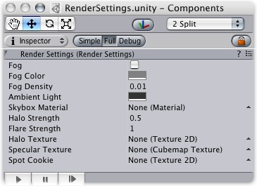
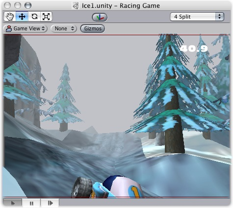

Previous
Previous
The Render Settings contain default values for a range of visual elements in your scene, like Lights and Skyboxes.

The Render Settings
To see the Player Settings choose: Edit -> Render Settings
Properties
| Property: | Function: |
|---|---|
| If enabled, fog will be drawn throughout your scene. | |
| Color of the Fog. | |
| Density of the Fog. | |
| Color of the scene's ambient light. | |
| Default skybox that will be rendered if no cameras have a skybox attached. | |
| Size of all light halos in relation to their Range. | |
| Intensity of all flares in the scene. | |
| Reference to a Texture2D that will appear as the glow for all Halos in lights. | |
| Reference to a Cube map that defines how specular highlights are drawn. If null the specular lookup is used. | |
| Reference to a Texture2D that will appear as the cookie mask for all Spot lights. |
Details
The Render Settings is used to define some common visual aspects of all the scenes in your project. It can be a great help if your entire game takes place outdoors. You can assign a single Skybox Material in the Render Settings, and then you don't have to worry about setting any Skyboxes on your individual scene cameras.
Likewise, if you want common rendering properties across all scenes except one or two properties of a particular scene, you can override those properties by changing the settings of the individual element. Fog and Ambient properties are specific to the open scene, and do not apply to the whole project.
Fog
Enabling Fog will give a misty haze to your scene. This both increases performance on lower-end machines and adds ambience. You can adjust the look and color of the Fog with Fog Density and Fog Color, respectively.
Adding fog is often used to optimize performance by making sure that far away objects fade out and are not drawn. Please note that enabling fog is not enough to enable this performance optimization. To do that you also need to adjust your Camera's Far Clip Plane. So that geometry far away will not be drawn. It is best to tweak the fog to look correct first. Then make the Camera's far clip plane smaller until you see the geometry being clipped away before the fog fades it out.

Fog is enabled in this scene from Forest Johnson's Racing Game
Hints
- Don't under-estimate the visual impact your game can make by thoughtfully tweaking the Render Settings!
- Render settings are per-scene: each scene in your game can have different render settings.